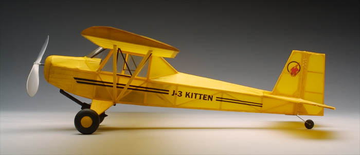

J-3 Kitten

|
The J-3 Kitten was featured in the March 2003 RC Microflight. It will also soon be released as a kit by Peck-Polymers suitable for free flight or micro radio control with rubber, mini electric or CO2 power.
Stats on my prototype are as follows. |
| Span | - | 24" | Motor | - | N20-5 | |||||
| Length | - | 14" | Prop | - | Peck Polymers 4.75" | |||||
| Area | - | 74.25 sq in | Servos | - | 2 Wes-Technic 2.4g | |||||
| Receiver | - | SH&R rx/esc | ||||||||
| Battery | Weight | Wingloading | Duration |
|---|---|---|---|
| 6 x 50 mAh nicad | 76 grams | 5.2 oz/sq ft | 5 min |
| 2 x 135mAh LiPoly | 62 grams | 4.25 oz/sq ft | 15 min |
| The structure and hardware allow quite a bit of room for lightening in the hands of an experienced modeler. An electric free flight version should weigh 10-20 grams less. Rubber or CO2 could see even more savings. |



return to
Other Builders' Models of the Kitten
Copyright 2003, Thayer Syme. All rights reserved